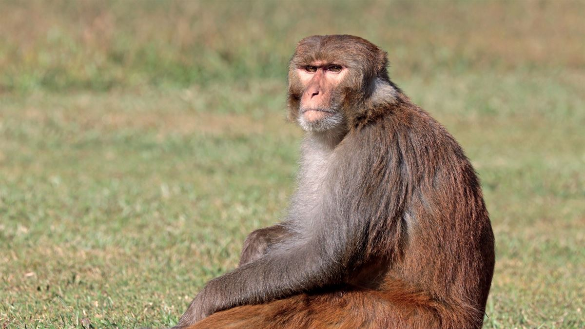
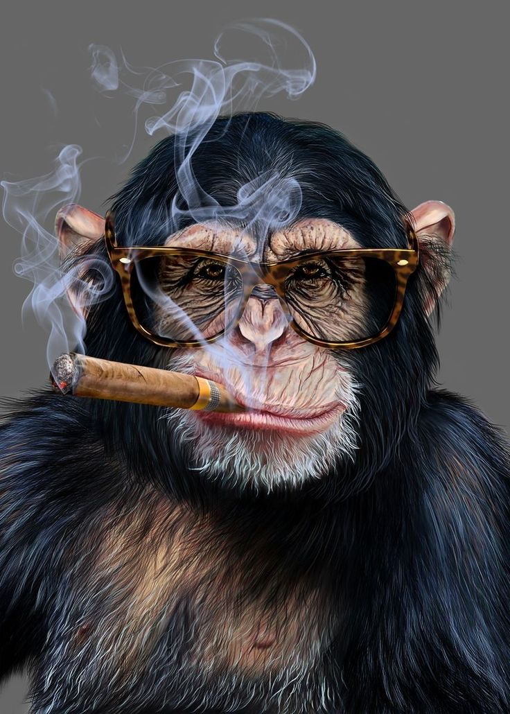

Mamaco da savana:
- Aventureiro
- Desbravador
- Guerreiro
- Amansador de felinos 🐈⬛
não confie nele!

!!! CONHECIDO COMO O MACACO DOMADOR !!!
SEU NOME É Primata Celestial
Mamaco Rei:
- Inundou a savana do Mamaco Celestial;
- Lutou 1x1 com o Aquaman;
- Enfrentou 500 lobos que invadiram sua fazenda.
- Teve a maior gang de catnip para felinos do mundo

CONHECIDO COMO O MACACO GANGSTER
SEU NOME É DESCONHEDIO